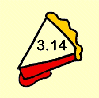

|
 |
It is well known thatis an irrational number. This means in simple English that its decimal form, which begins 3.141592�, goes on forever without any repeating blocks of digits.
The purpose of this page is to merely present a list of websites that show
First, here are some sites that present the digits of
- From The Joy of Pi, here are 10,000 digits of pi.
- From The Web Page Dedicated to Pi, here are 128,000 digits, and much, much more.
- From The Exporatorium, here are 1,000,000 digits!
- From The University of Exeter, here are 10,000 digits, plus a frequency list.
- From Math Forum, this is a mere 1000 digits.
- From The Friends of Pi, this gives 100,000 digits, well arranged.
- From My Own Little World, another site of 10,000 digits.
- From Stephen John Hsu's Home Page . He copied The Joy of Pi list of 10,000 digits, but they're arranged in rows of 100's, 10 sets of 10.
- From a German? site. Another copy-cat of the Joy of Pi version.
- From Jeffrey Branzburg's website. Click on "back" to see more information about pi.
Now the following sites do not present the digits in a group-of-10 format. Though more difficult to read, they are being presented nonetheless for whatever value they may offer you, the reader. (Some have links to other pages.)
- Centre for Experimental and Constructive Mathematics: 10,000 digits.
- University of Illinois. Contains two nice links for additional pi information.
- http://pi.lacim.uqam.ca/piDATA/pi/html/. Contains many interesting links here.
- Norm's Page. The first 8073 digits of pi. (hmmm... that's odd!)
- Somebody's Useless Facts. 99,999 digits, or so it claims. I didn't count.
- Pi Day org. A page from piday.org. More info available.
- MAA-NJ Homepage. 10,000 digits.
- www.fun-facts.com. 10,000 digits.
Here comes a very special website that is rather useful as well as informative. It has been prepared by Eve Andersson, a professor at Northface University in Salt Lake City, Utah. Click HERE, and we guarantee that you won't be disappointed.
It is of interest to note that Eve had earlier made a contribution to WTM with her poem about pi. It can be seen HERE, as item #22.
This final section is a collection of other sites that discuss the mathematics of pi. They are presented in no particular order.
- Math Trek, by Ivars Peterson.
- Slice of Pi, Anyone?.
- Calculating Digits of Pi in Other Bases.
- Are the Digits of pi Random?.
- The Pi Code, by Mike Keith.
More to come later...
| Comments? Send e-mail. | Back to top | Go back to Home Page | Go back to Contents |